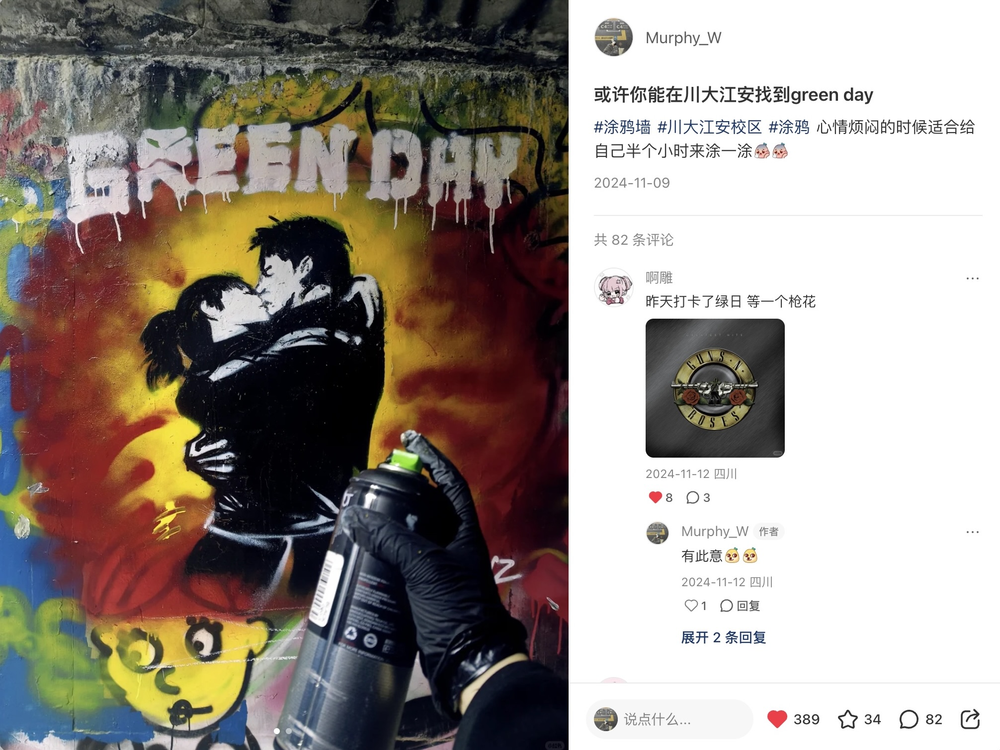
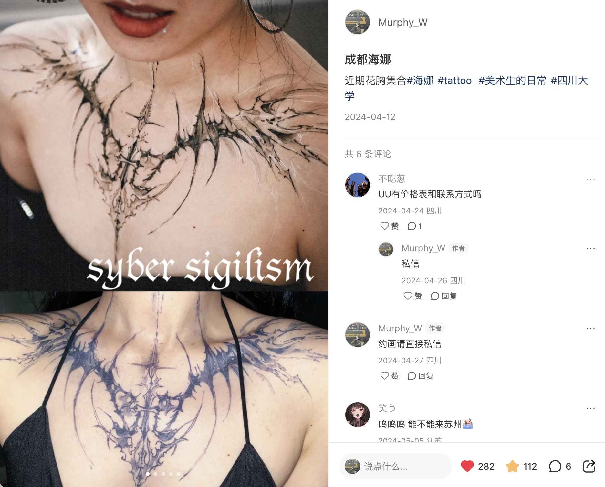
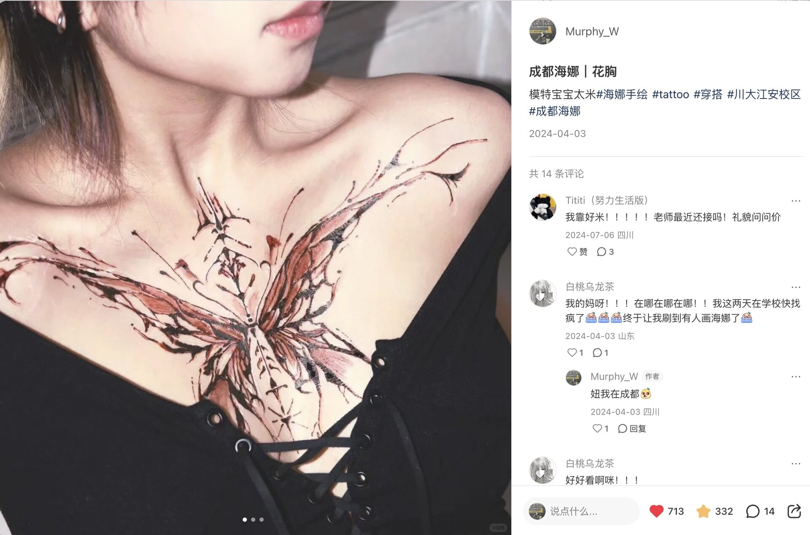
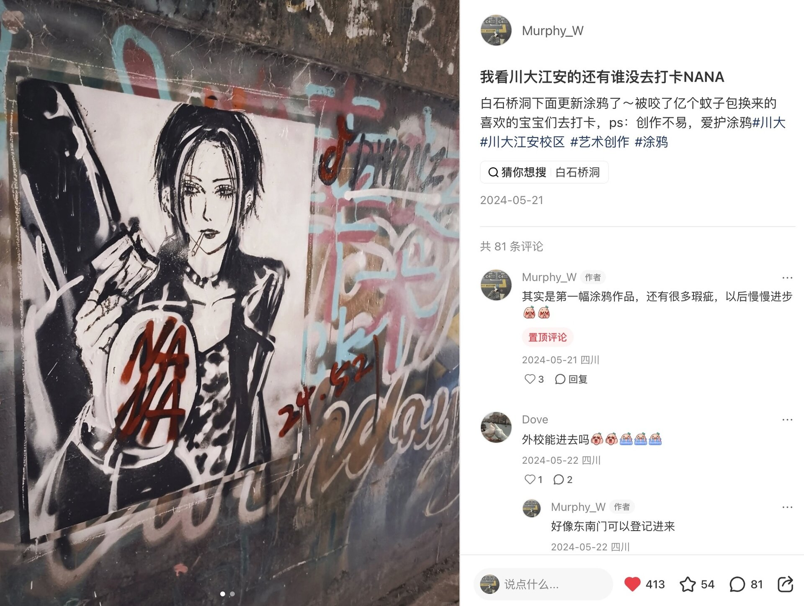
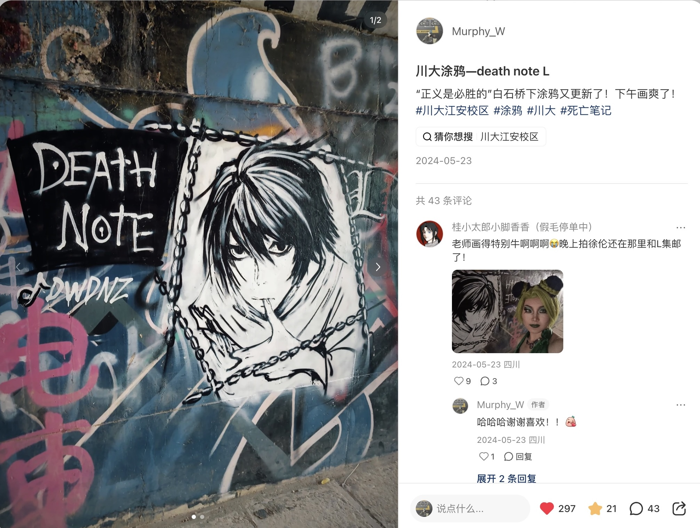
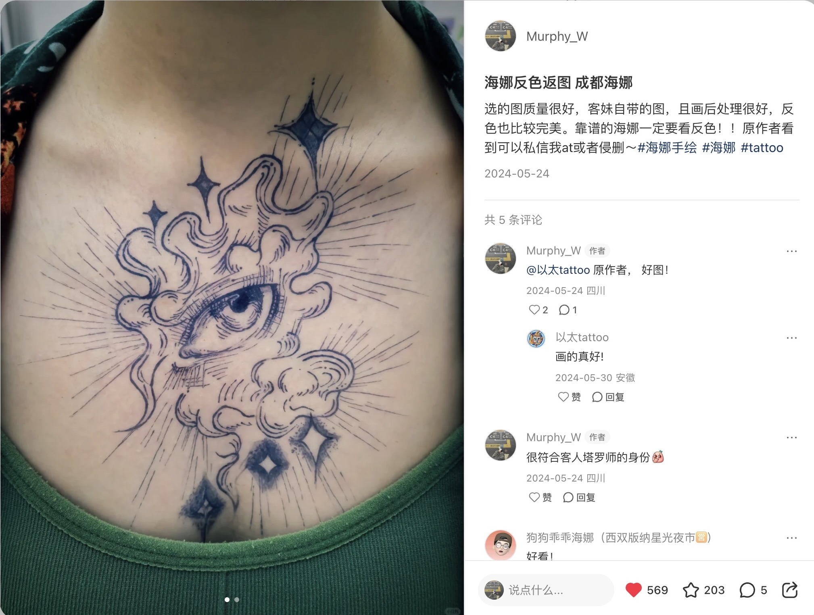
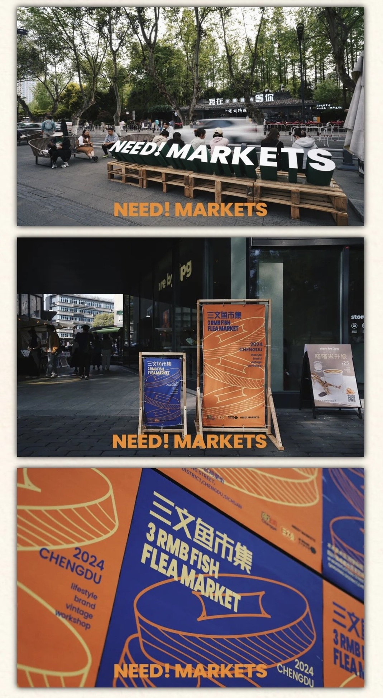
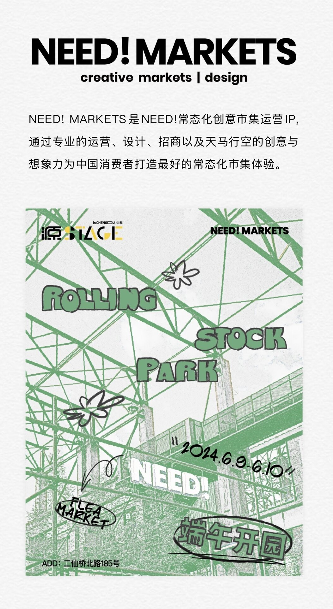

亚文化垂类账号 · 内容运营案例
以美术生真实身份为支点，打造「街头涂鸦 × 海娜手绘」垂类内容账号，探索亚文化 IP 联动与本地化流量策略的有机结合。
双线内容策略：以川大涂鸦打卡构建本地化流量入口，以成都海娜手绘建立品类标签与收藏转化。

以四川大学江安校区白石桥洞下涂鸦墙为固定场景，将自身创作行为转化为可打卡的本地化内容。通过音乐 IP（Green Day）联动，放大内容共鸣与搜索流量。

以「成都海娜」作为品类标签，展示花胸手绘作品集合，兼顾时尚穿搭与刺青审美两类受众。高质量视觉封面驱动收藏转化，收藏率明显高于涂鸦系列，体现强参考价值属性。

封面即内容，直接触发收藏行为；1.2 万浏览中转化赞藏率极高（约 8.7%）。

评论量 82 显示高互动，评论区出现大量打卡询问；「被蚊子咬」细节制造真实感与创作人格。
地点标记「四川大学江安校区」强化本地打卡属性；音乐 IP 联动带来圈层精准流量。

评论量 43 显示 ACG 粉主动互动；帖子与 NANA 帖共同构成「川大 ACG 涂鸦系列」内容矩阵。

精准覆盖小众审美圈层，粉丝质量高；蓝海标签策略避开红海竞争。
「川大江安校区」「成都海娜」等地域标签精准锁定本地用户，搜索流量持续带来新用户，私信咨询量显著增长。
通过 Green Day、Death Note、NANA 等热门 IP 跨界联动获取初始流量，无需付费推广即可完成账号冷启动。
以美术生真实身份为切入点，内容天然具备可信度与差异化，避免同质化竞争。「被蚊子咬」等细节制造真实感与创作人格。
涂鸦线负责流量曝光与互动，海娜线负责收藏转化与商业价值，两条内容线覆盖不同用户行为，数据表现均衡。
高赞帖封面均具备强视觉辨识度（涂鸦人物 / 花胸特写），封面信息密度与点击欲望成正比，封面即内容的策略直接驱动收藏行为。
「Syber Sigilism」等小众风格关键词竞争度低但精准，找到细分圈层比追热点更易形成稳定互动，收藏率远超平台均值。
从内容曝光到预约订单的完整闭环
小红书涂鸦与海娜内容积累本地关注度，搜索流量持续带来新用户
地域标签精准锁定成都本地用户，私信咨询量显著增长
受邀参加 NEED! 市集品牌活动，线上流量转化为线下体验
市集 + 内容形成闭环，大量用户私信预约海娜手绘服务


亚文化垂类内容天然具备高粘性，通过内容 → 社群 → 线下 → 变现的闭环，可以实现从兴趣到收入的完整转化路径。